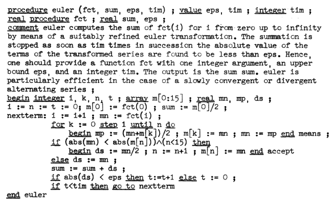

Les logiciels des premiers ordinateurs
étaient écrits en langage assembleur.
Un langage d'assemblage ou langage assembleur
est, en programmation informatique, le langage
de plus bas niveau qui représente le langage machine
sous une forme lisible par un humain. Les combinaisons
de bits du langage machine sont représentées par des
symboles dits « mnémoniques », c'est-à-dire faciles à
retenir.

Les systèmes d'exploitation ont été écrits en
langage d'assemblage jusqu'à l'introduction de MCP
de Burroughs, en 1961, qui était écrit en ESPOL,
dialecte d'Algol.
Son compilateur pouvait atteindre 250 lignes par seconde.

Du langage C à son résultat après compilation, en passant par son équivalent en assembleur.
 En savoir plus
En savoir plus